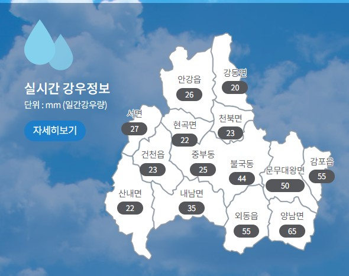

경주 지역 강수량
| 지역 | 강수량 (mm) | 상태 |
|---|---|---|
| 경주시 중심 | 120 | 위험 |
| 불국사 지역 | 95 | 주의 |
| 감포읍 | 70 | 정상 |
과거 특보
-
2023년 6월 22일
형산강 범람 경고
조치: 주민 대피 권고, 피해 최소화
-
2022년 8월 15일
경주시 중심부 집중호우
결과: 침수 피해, 복구 완료
-
2021년 7월 3일
불국사 지역 강우량 초과
사유: 계속된 폭우, 대비 필수